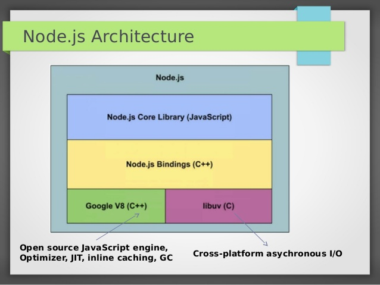

Based on original post How well do you know Node.js?. In it, Samer Buna lists 48 questions which be expects a Node.js developer to be able to answer.
What is the relationship between Node.js and V8? Can Node work without V8?
V8 is a JavaScript engine developed by The Chromium Project, first for the Google Chrome web browser and later for other projects, including NodeJS. It allows to compile, optimize and run JavaScript code and is the base for code execution inside Node.js. However, V8 is not essential for Node.js; There are attempts to use other javascript engines, such as node-chakracore (Node.js on ChakraCore) or spidernode (Node.js on top of SpiderMonkey).
How come when you declare a global variable in any Node.js file it’s not really global to all modules?
A module’s code is wrapped by a function wrapper. To see it just execute node.js file with syntax error on first line:
> node 1/bugToSeeWrapperFn.js
> /home/oop/Documents/bugToSeeWrapperFn.js:1
(function (exports, require, module, __filename, __dirname) { foo
// module code
});
This wrapping allows to keeps top-level variables (defined with var, const or let) scoped to the module, rather than to the global object.
Read more on the module wrapper.
When exporting the API of a Node module, why can we sometimes use exports and other times we have to use module.exports?
To understand the difference, we can look at this simplified view of a JavaScript file in Node.js:
var module = { exports: {} };
var exports = module.exports;
// your code
return module.exports;
So, exports is initially a reference to module.exports. if you want to simply export an object with named fields, you can use the exports shortcut. For example, had we written exports.a = 9, we’d actually export this object: { a: 9 }.
However, if you want to export a function or another object, you have to use the module.exports but you cannot use exports. For example: module.exports = function bar() {}. Once you do that, exports and module.exports no longer reference the same object.
Can we require local files without using relative paths?
There are several options, as described here.
Can different versions of the same package be used in the same application?
No, this is currently prevented by NPM. see this issue for more details.
What is the Event Loop? Is it part of V8?

In event-driven programming, an application expresses interest in certain events and respond to them when they occur. This is the way Node.js can handle asynchronous execution while running the code in a single thread.
When an asynchronous operation starts (for example, when we call setTimeout, http.get or fs.readFile), Node.js sends these operations to a different thread allowing V8 to keep executing our code. Node also calls the callback when the counter has run down or the IO / http operation has finished.
In Node.js, the responsibility of gathering events from the operating system or monitoring other sources of events is handled by libuv, and the user can register callbacks to be invoked when an event occurs. When async operation is done libuv passes control to V8 to execute the callbacks.
What is the Call Stack? Is it part of V8?
The call stack is the basic mechanism for javascript code execution. When we call a function, we push the function parameters and the return address to the stack. This allows to runtime to know where to continue code execution once the function ends. In Node.js, the Call Stack is handled by V8.
What is the difference between setImmediate and process.nextTick?
setImmediatequeues a function behind whatever I/O event callbacks that are already in the event queue.process.nextTickqueues a function at the head of the event queue so that it executes immediately after the currently running function completes.setTimeoutvssetImmediatevsprocess.nextTick, visual explanation [http://stackoverflow.com/questions/17502948/nexttick-vs-setimmediate-visual-explanation#38742776]setImmediateexecutes aftersetTimeout, explanation
How do you make an asynchronous function return a value?
You could return a promise resolving to that value, for example return Promise.resolve(value).
Can callbacks be used with promises or is it one way or the other?
Callbacks and promises can be used together. For example, the following method calls a callback and returns a promise:
function processToGetValue(cb) {
// do some processing to value
if (cb) {
cb(value);
}
return Promise.resolve(value);
}
What are the major differences between spawn, exec, and fork?
execmethods spawns a shell and then executes a command within that shell, buffering any generated outputspawnworks similarly toexec. The main difference is that spawn returns the process output as a stream while exec returns it as a bufferforkis a special case of spawn that also creates a newV8engine instance. This is useful to create additional workers of the same Node.js code base. (for example, in the cluster module).
Great article Understanding execFile, spawn, exec, and fork in Node.js